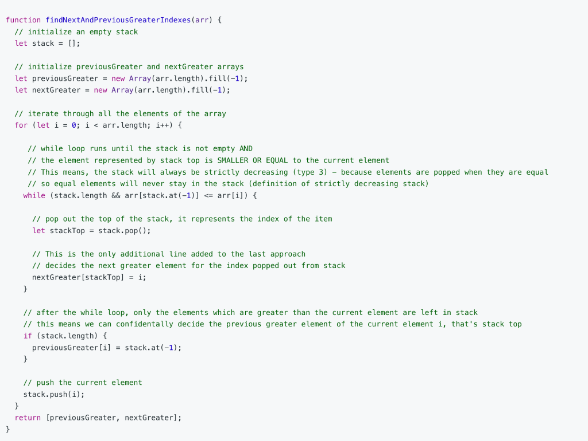
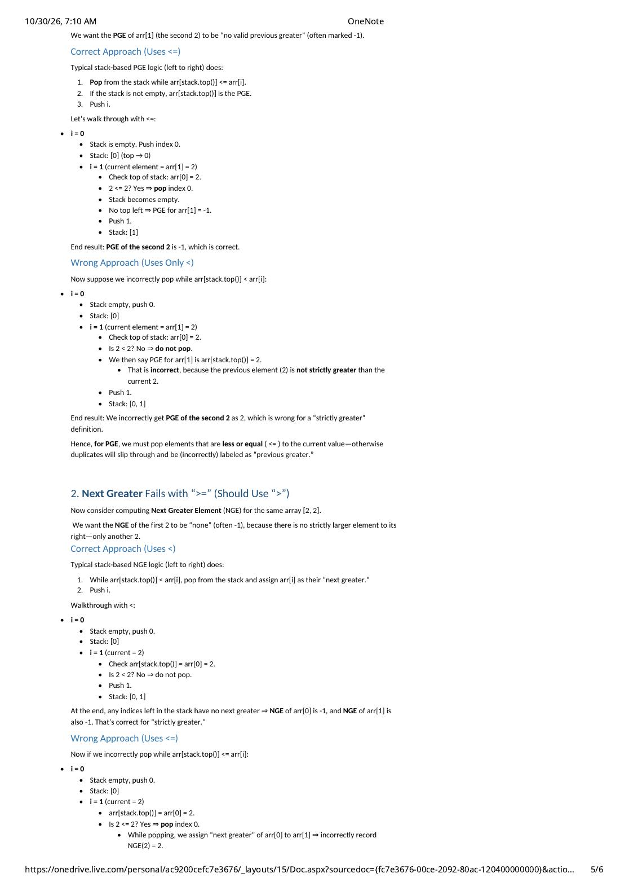
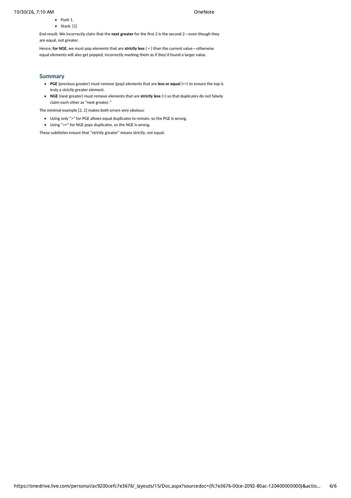

Part 3: The [2, 2] Duplicate Trap — Strict vs. Non-Strict Comparisons & Single-Pass NGE + PGE
Expanded from MonotonicStack_01_A_comprehensive_guide_and_template.pdf (Pages 4–6) · View original handwritten pages
When all elements in an array are distinct, < and <= behave identically. In real interview and contest problems, however, duplicate values are the #1 source of Wrong Answers in monotonic stack code. Look back at our summary table from Part 2:
- Next Greater Element (NGE) pops while
arr[stack.top()] < arr[i](strict inequality). - Previous Greater Element (PGE) pops while
arr[stack.top()] <= arr[i](non-strict inequality).
Why do two problems that both ask for a strictly greater element require different operators in their while loops? Let's trace the minimal two-element array from Pages 4–6 of the handwritten notes:
Because neither 2 has a strictly larger value anywhere in [2, 2], the ground-truth answer for both PGE and NGE is [-1, -1].
1. Why Previous Greater (PGE) Fails with < and Must Use <=
We want PGE[1] (for the second 2) to be -1 ("no valid previous greater"). Compare what happens at $i = 1$ under <= vs. <:
Correct PGE Approach — Uses <= (Pop Equal Duplicates)
- $i = 0$ (
arr[0] = 2): Stack is empty $\implies \text{PGE}[0] = -1$. Push index0. Stack:[0]. - $i = 1$ (
arr[1] = 2):- Check
arr[stack.top()] <= arr[1]$\implies$ is2 <= 2? Yes $\implies$ pop index0! - Stack becomes empty $\implies$ no strictly greater element left $\implies$
PGE[1] = -1. - Push index
1. Stack:[1].
- Check
Result: PGE = [-1, -1] — Correct!
Wrong PGE Approach — Uses Only < (Leaves Equal Duplicates on Stack)
- $i = 0$ (
arr[0] = 2): Stack is empty $\implies \text{PGE}[0] = -1$. Push index0. Stack:[0]. - $i = 1$ (
arr[1] = 2):- Check
arr[stack.top()] < arr[1]$\implies$ is2 < 2? No $\implies$ do not pop! - Outside the
whileloop, stack is non-empty ([0]), so we setPGE[1] = arr[0] = 2!
- Check
Result: PGE = [-1, 2] — Wrong! Because we failed to pop equal elements, the earlier duplicate 2 stayed on top of the stack and masqueraded as "strictly greater" than 2.
2. Why Next Greater (NGE) Fails with <= and Must Use <
Now compute Next Greater Element (NGE) on the exact same array arr = [2, 2]. We want NGE[0] (for the first 2) to be -1:
Correct NGE Approach — Uses < (Do Not Pop Equal Duplicates)
- $i = 0$ (
arr[0] = 2): Stack empty, push0. Stack:[0]. - $i = 1$ (
arr[1] = 2):- Check
arr[stack.top()] < arr[1]$\implies$ is2 < 2? No $\implies$ do not pop! - Push
1. Stack:[0, 1].
- Check
- End of loop: Both indices
0and1remain unpopped on the stack, keeping their default-1.
Result: NGE = [-1, -1] — Correct!
Wrong NGE Approach — Uses <= (Falsely Pops Equal Duplicates)
- $i = 0$ (
arr[0] = 2): Stack empty, push0. Stack:[0]. - $i = 1$ (
arr[1] = 2):- Check
arr[stack.top()] <= arr[1]$\implies$ is2 <= 2? Yes $\implies$ pop index0! - Inside the
whileloop, popping index0assignsNGE[0] = arr[1] = 2!
- Check
Result: NGE = [2, -1] — Wrong! Using <= caused the second 2 to pop the first 2 and falsely label itself as strictly greater.
3. Computing Strict NGE & Strict PGE Together in a Single Pass
Many online guides try to compute both previousGreater and nextGreater in a single loop by merging the two templates directly:

while loop uses <= and unconditionally sets nextGreater[stackTop] = i, running this function on arr = [2, 2] returns nextGreater = [1, -1] instead of [-1, -1]!Watch Out for Both Halves of the Duplicate Trap ([2, 2] and [2, 2, 5])
Look closely at why naive merging creates a tug-of-war between < and <=:
- If you use
<=in thewhileloop and addif (arr[stackTop] < arr[i]) nextGreater[stackTop] = i;inside the loop, it fixes[2, 2](returning[-1, -1]), but considerarr = [2, 2, 5]: at $i = 1$, the second2pops the first2(index0) off the stack without settingnextGreater[0], so when5arrives at $i = 2$, index0is already gone from the stack and misses5! - Instead, what happens if we keep
<in thewhileloop (so equal duplicates like[0:2, 1:2]stay on the stack until a truly greater element like5pops all of them)?nextGreateris 100% exact: Every index is popped if and only if it meets its first strictly greater element to the right.- How do we get
previousGreater[i]after the<loop? Right afterwhile (!st.empty() && arr[st.top()] < arr[i])terminates, every element betweenst.top() + 1andi - 1was strictly smaller thanarr[i]. Thusst.top()is either strictly greater thanarr[i](in which casePGE[i] = st.top()), or equal toarr[i](in which caseihas the exact same Previous Greater Element asst.top(), which we already computed inprevGreater[st.top()])!
// Exact Single-Pass Strict NGE + Strict PGE (Handles [2, 2], [2, 2, 5], and all duplicates!)
pair<vector<int>, vector<int>> findStrictNgeAndPgeSinglePass(const vector<int>& arr) {
int n = arr.size();
vector<int> prevGreater(n, -1), nextGreater(n, -1);
stack<int> st; // Type 4: Non-increasing (equal allowed so no duplicate misses its NGE!)
for (int i = 0; i < n; ++i) {
// Strictly '<' ensures equal elements are NEVER popped prematurely
while (!st.empty() && arr[st.top()] < arr[i]) {
int stackTop = st.top();
st.pop();
nextGreater[stackTop] = i;
}
if (!st.empty()) {
// If st.top() has an equal value, reuse its already-computed strict PGE in O(1)!
prevGreater[i] = (arr[st.top()] == arr[i]) ? prevGreater[st.top()] : st.top();
}
st.push(i);
}
return {prevGreater, nextGreater};
}4. Interactive Duplicate Edge-Case Tester
Test how the three single-pass strategies behave on duplicate-heavy inputs ([2, 2], [2, 2, 5], and [13, 8, 1, 5, 2, 5, 9, 7, 6, 12]):
5. Bonus: When Is Asymmetric < + <= Used Intentionally?
There is one famous problem family where pairing strict on one side and non-strict on the other is not a bug, but a deliberate counting trick: Sum of Subarray Minimums / Maximums (LeetCode 907 & LeetCode 2104).
- When answering boundary queries ("What is the Next Greater and Previous Greater element of $i$?"), both sides must be strictly greater, so on
[2, 2]the answer isPGE = [-1, -1]andNGE = [-1, -1]. - When summing $\max(B)$ over all subarrays $B$ on
[2, 2], there are $3$ subarrays:[2](index 0),[2](index 1), and[2, 2](indices 0..1). If both2s claimed[2, 2](using strict boundaries on both sides),[2, 2]would be double-counted! Defining the left boundary as strictly greater (>) and the right boundary as greater-or-equal (>=)—which is precisely what the unguarded<=loop computes!—assigns[2, 2]uniquely to the rightmost2so every subarray is counted exactly once.
Final Takeaway Summary
- Standalone PGE / PSE: Must pop equal elements (
<=for PGE,>=for PSE) so the surviving stack top is strictly greater/smaller. - Standalone NGE / NSE: Must pop only strictly violating elements (
<for NGE,>for NSE) so duplicates never falsely claim each other. - Single-Pass Strict NGE + Strict PGE: Pop with strict
<and setprevGreater[i] = (arr[st.top()] == arr[i]) ? prevGreater[st.top()] : st.top().
From the Handwritten Notes
Open the original scans of Pages 5 and 6 below to compare the complete step-by-step arr = [2, 2] counterexamples for PGE and NGE:
View original page 5 — Step-by-step [2, 2] walkthroughs: Correct vs. Wrong for PGE and NGE


arr = [2, 2] to prove why PGE requires <= and NGE requires <.View original page 6 — Conclusion & duplicate edge-case summary

